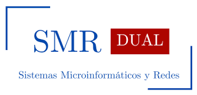

Montaje y Mantenimiento de Equipos
Aprenderás a ensamblar, configurar y reparar equipos informáticos, además de diagnosticar averías.
Conoce los módulos del primer año del ciclo de Sistemas Microinformáticos y Redes.

Aprenderás a ensamblar, configurar y reparar equipos informáticos, además de diagnosticar averías.
Instalación, configuración y gestión de sistemas operativos en equipos personales.
Uso avanzado de herramientas ofimáticas y utilidades de productividad en entornos de oficina.
Diseño, instalación y mantenimiento de redes de área local (LAN) y su configuración básica.